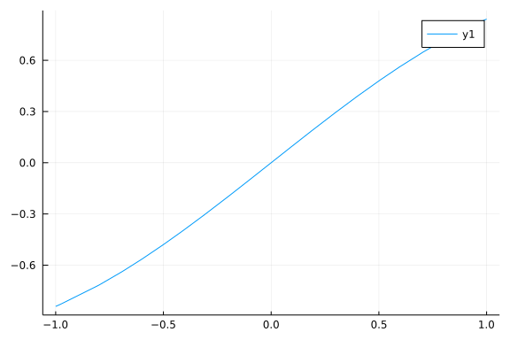

Theory Preset
Two point function flow
The flow of two point function is:
\[\begin{aligned} &\partial_{\tau} \Gamma_{k, \phi_{q} \phi_{c}}^{(2)}\left(p_{0},p_s\right) \\ &=-\frac{1}{24} \frac{(N+2)}{(2 \pi)^{2}}\left[-\frac{\operatorname{coth}\left(\frac{E_{\pi, k}(k)}{2 T}\right)}{\left(E_{\pi, k}(k)\right)^{3}}-\frac{\operatorname{csch}^{2}\left(\frac{E_{\pi, k}(k)}{2 T}\right)}{2 T\left(E_{\pi, k}(k)\right)^{2}}\right] \\ &\times\left(2 k^{2}\right) \int_{0}^{k} dq q_s^{2} \int_{-1}^{1} d \cos \theta\left[\left.\bar{\lambda}_{4 \pi, k}^{\mathrm{eff}}\right|_{q_{0}=E_{\pi, k}(k)}\right. \\ &\left.+\left.\bar{\lambda}_{4 \pi, k}^{\mathrm{eff}}\right|_{q_{0}=-E_{\pi, k}(k)}\right] \end{aligned}\]
using FRGRealTime, Plotsplot a fig
plot(sin,-1,1)